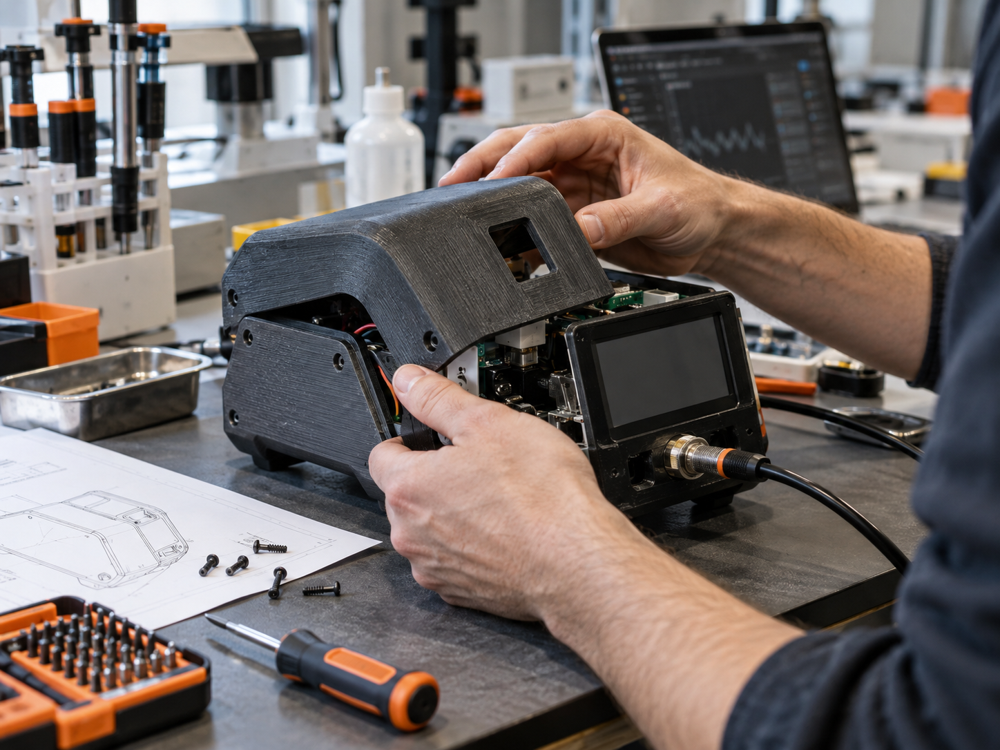
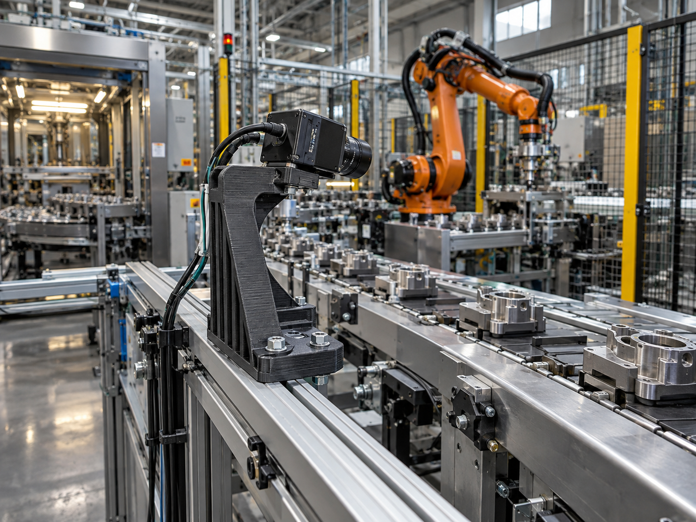
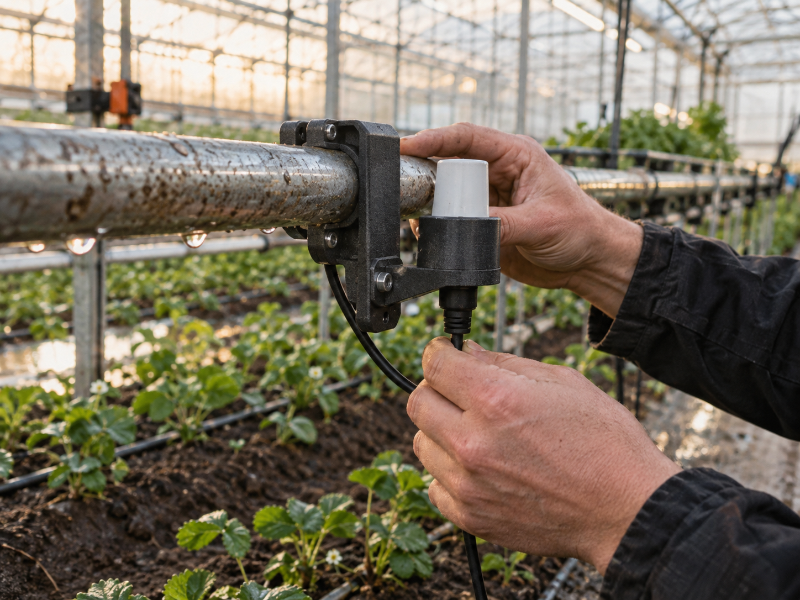
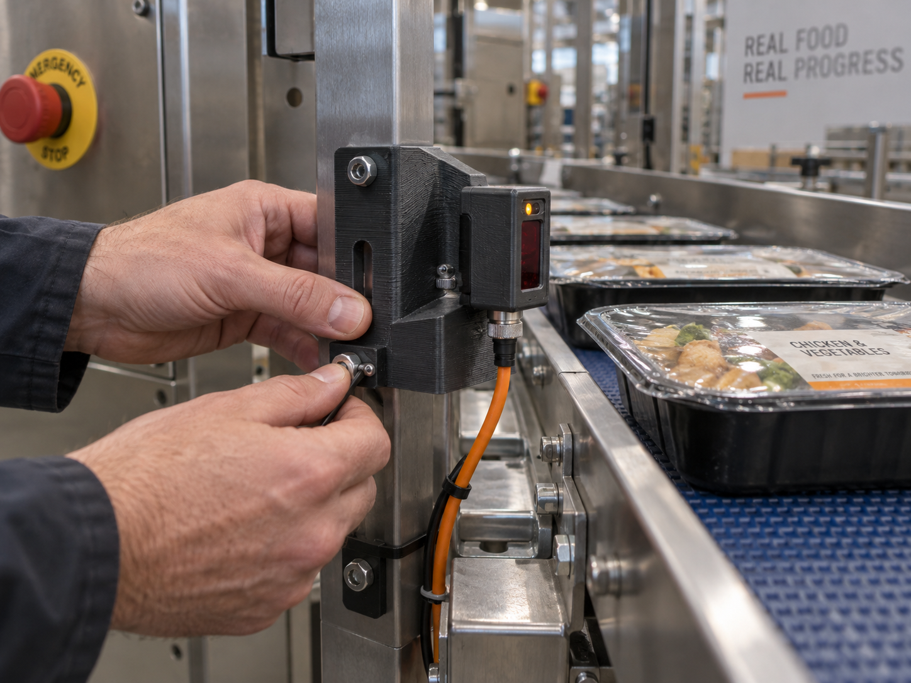
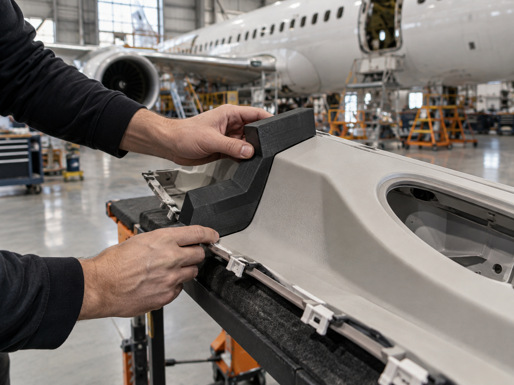
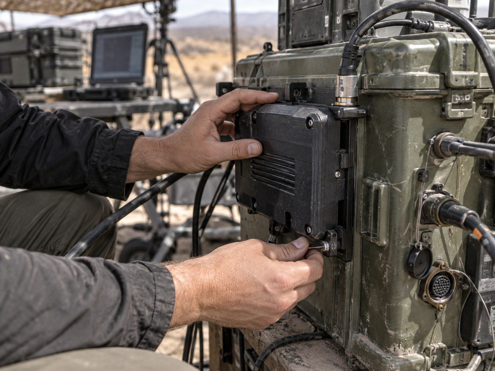
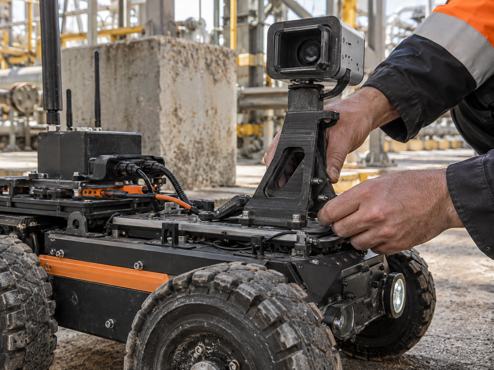
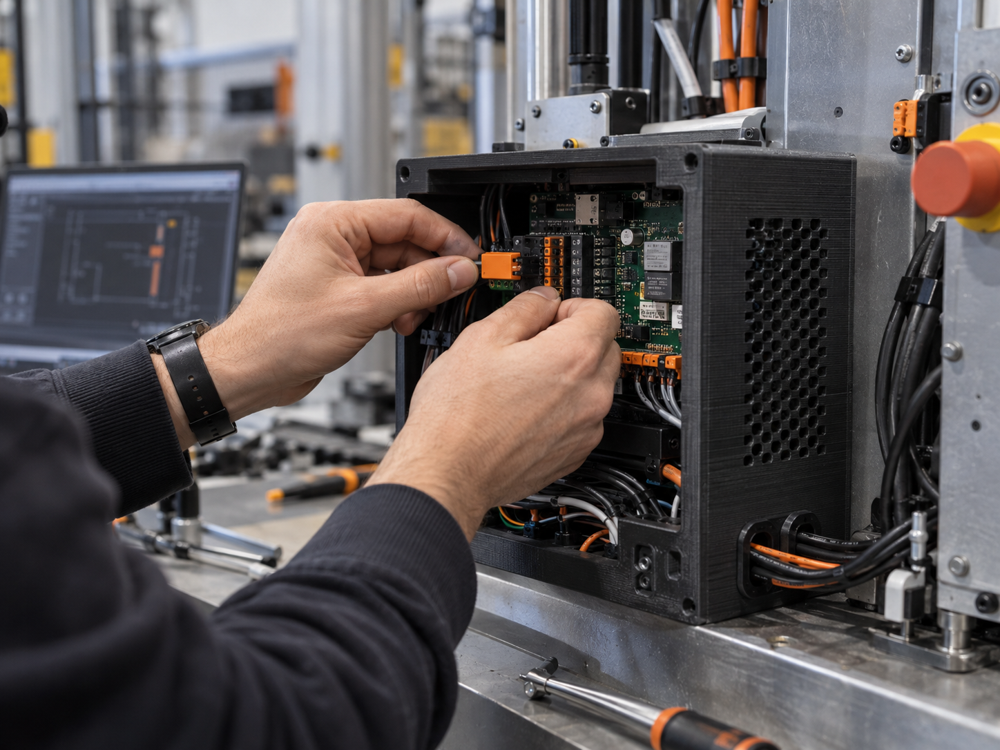

MedTech
מפתחים. בודקים. משפרים.
אבות טיפוס מאפשרים לבחון צורה, אחיזה והתאמה בין רכיבים לפני שמתקדמים בייצור. מגדירים מה רוצים ללמוד מכל דגם ובוחרים חומר ותהליך בהתאם.
מודלים לבדיקת הרכבה • מארזים בפיתוח • סבבי התאמה
שלחו פרויקט לבדיקה←
כל תחום מביא איתו תנאי עבודה אחרים. אנחנו מחברים תכנון, חומר ותהליך ייצור לדרישות של החלק — מהדגם הראשון ועד לסדרה.

מפתחים. בודקים. משפרים.
אבות טיפוס מאפשרים לבחון צורה, אחיזה והתאמה בין רכיבים לפני שמתקדמים בייצור. מגדירים מה רוצים ללמוד מכל דגם ובוחרים חומר ותהליך בהתאם.
מודלים לבדיקת הרכבה • מארזים בפיתוח • סבבי התאמה
שלחו פרויקט לבדיקה←
מהצורך בשטח לתכנון של חלק.
סביבת העבודה היא נקודת המוצא: שמש, לחות, לכלוך ועומסים. בוחנים את הממשק לציוד הקיים ומגדירים את הדרישות לפני בחירת חומר וייצור דגם לבדיקה.
תושבות לחיישנים • מתאמים לציוד • בדיקות התאמה
שלחו פרויקט לבדיקה←
חלק קטן. חלק מתהליך גדול.
מתקנים ועזרי הרכבה נבחנים כחלק ממערך הייצור: מידות, ניקוי, טמפרטורה ותדירות שימוש. כשנדרש מגע עם מזון, ההתאמה והאישורים נבדקים בנפרד — הדפסה אינה אישור לשימוש.
עזרי הרכבה • מחזיקים ומכוונים • דגמי בדיקה
שלחו פרויקט לבדיקה←
בודקים את ההתאמה לפני ההרכבה.
מודלים לפיתוח מאפשרים לבחון ממשקים, נפחים וגישה לרכיבים. מתחילים מדרישות הפרויקט ומפרידים בין דגם לצורכי פיתוח לבין חלק שמיועד לשימוש מבצעי או לטיסה, הדורש אימות ואישורים מתאימים.
מודלי נפח • בדיקות ממשקים • עזרי הרכבה
שלחו פרויקט לבדיקה←
מדרישה מוגדרת לדגם שניתן לבדוק.
תכנון וייצור לצורכי פיתוח, תוך התייחסות לממשקים ולתנאי העבודה שהוגדרו. פרטי פרויקט, תמונות ומידע טכני נכללים בפרסום רק לאחר אישור הלקוח.
מארזים לציוד • דגמי התאמה • מתקני בדיקה
שלחו פרויקט לבדיקה←
כל רכיב צריך למצוא את המקום שלו.
תושבות, מארזים וחלקי שילוב מחברים בין המבנה המכני לאלקטרוניקה. בוחנים מקום לחיווט, נגישות להרכבה והתאמה בין הרכיבים, ומתקדמים דרך דגמים וסבבי בדיקה.
תושבות חיישנים • מארזי אלקטרוניקה • שילוב רכיבים
שלחו פרויקט לבדיקה←
מהמעגל למוצר שאפשר להרכיב.
המארז מתוכנן סביב הרכיבים ולא להפך. מגדירים נקודות חיבור, פתחים למחברים, גישה לתחזוקה ודרישות אוורור, ובודקים את ההרכבה בדגם פיזי לפני השלב הבא.
מארזים מותאמים • פאנלים למחברים • בדיקות הרכבה
שלחו פרויקט לבדיקה←שלחו קובץ, שרטוט, תמונה או תיאור קצר. נבדוק את הנתונים ונחזור עם הצעד הבא.